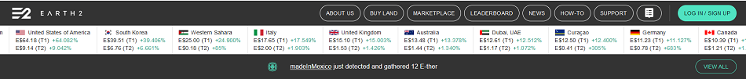
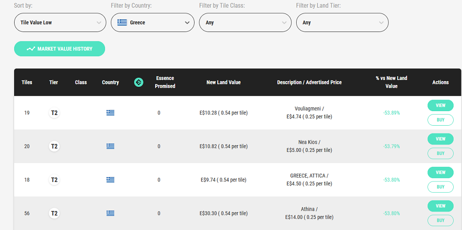

Earth 2
Earth 2.io, descripted by its creators as “the beginning of our world's future virtual existence”, is a web platform provides its users the possibility of buying, selling and/or bidding on virtual land. The available land is represented by a mercator projection of a world map sliced up in a virtual grid of approximately 10x10 meters which spans the entire planet. Well, this is what the “About Us” section of the website states, but Earth 2 is to put it simply, a google earth map of the world, separated by grids, each grid costs real money to get and people can buy it, sell it or bid on it.
Earth 2.io advertises itself as a very successful, by visiting their site you get to see all these numbers, and users interacting, and of course the counter of all the lands going up in prices. You will see ridiculous rises of %, the website though only shows the +% but if you dig deeper you can see that everything drops.
Picture of the advertised rises of land in Earth 2.io
On the image above, you can see how everything is green and +%, showing that it has real value. What Earth 2 hides though is the real truth. People don’t gain anything, you can only sell the land to someone else, and you have to sell it more than you originally bought it in order to make profit. If you visit the “Marketplace” and select any country, you will see that, everything is -%.
Picture of hidden -% of land in Earth 2.io
How does It work?
The way Earth 2 works is buy you originally creating an account. Your purpose then is to buy land. Once you select the land you want to buy, you have to put your money in the site and convert your money ( of any currency ) to E$ (Earth 2.io currency) and buy it with their currency.
E$
What is E$? and How does it work?
E$ is Earth 2.io’s currency, with this you can buy and bid land on their site. 1 E$= 1$. E$ is nothing, has no value and there is no scarcity of it, a developer can just make E$ out of nowhere because it’s nothing. The company is trying to make E$ into a cryptocurrency in order to make some value to it, but until now, this hasn’t been successful. The way they have made this system is that, anyone but the company can lose money, the company can only profit from this.
Their Promises
What Earth 2 aims to bring people and technologies together by creating a robust location-based games and technologies platform, which supports strong virtual communities and economies. Earth 2 will be about people and the virtual representations of places which bring them together. The problem is that this project has been going for a year now and no progress has been made into the actual “game” or “3D World” that they talk about. What they have only to show is their google earth image of earth that you can zoom in and see the grids, and of course buy sell and bid on it.
Earth 2 has had a big budget from the start, many people invested on it accumulating a revenue of about 5 millions $. And since their budget is not public, we can assume with 1.3m players, they have a big budget to deliver something for that 1 year of operating. But it has done nothing.
Why is it a Scam?
Well, We can say that Earth 2 is a scam, but I and many others believe so, Why is that though? Many people criticize Earth 2.io a Ponzi scheme , with their promises never delivered so far, with their lack of transparency and with their promises of “Huge Gains” while taking money off Earth 2 can big a big chore by itself.
The reasons I consider it a Big scam
- Overpriced “fake” land that you cannot take money off easily
- Promises of “big gains” even though there is nothing to back this up
- Zero progress on their 3D world
- Minimal updates that add nothing to the whole earth 2 experience
- The community shuts down criticism or in questions they cannot answer
- The founder Shane . He has basically no track record of social media, or a previous following at all. No references or previous work to be shown really . Linked in seems off
- Every type of currency they have in the “game” has no value